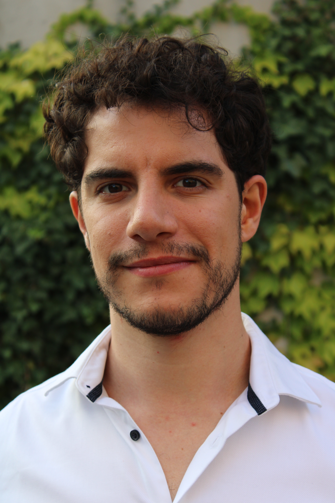

PhD Graduate · Systems Neuroscience · FMI Basel
How does the brain learn to make sense of the world? My research tackles this question in the olfactory system, where stimuli map onto neural activity in a dynamic and context-dependent manner. Using the awake adult zebrafish, I combine classical conditioning and functional imaging to understand how experience reorganizes odor representations, and what this tells us about cortical computation more broadly.